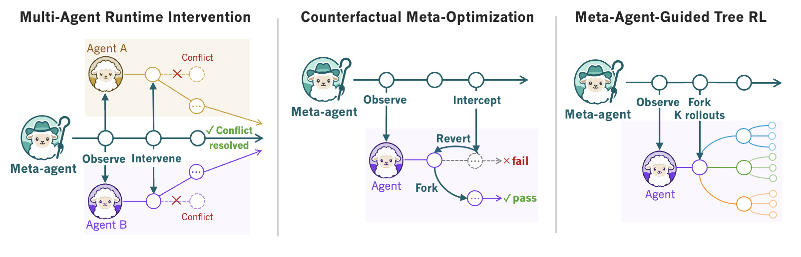
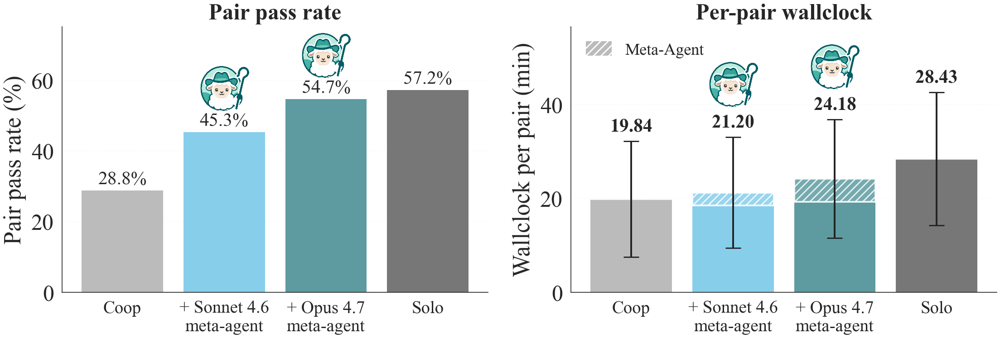
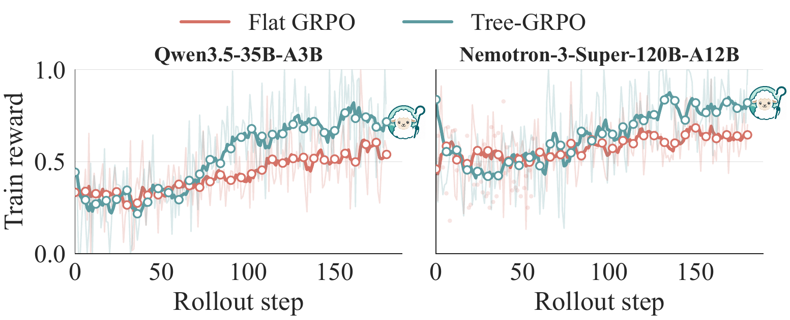

Shepherd: Enabling Programmable Meta-Agents via Reversible Agentic Execution Traces
Simon Yu*1, Derek Chong*2, Ananjan Nandi*2, Dilara Soylu2, Jiuding Sun2, Christopher D. Manning2, Weiyan Shi1
1Northeastern University · 2Stanford University
Homepage · Paper · alphaXiv · Code · Docs ·
![Figure 1. Top: (left) The visualization of an optimization meta-agent and (right) its implementation in Shepherd. A meta-agent is a function over another agent's run: here it creates and observes the worker, intercepts when the worker makes a buggy edit, then reverts it, and forks to continue with another passing edit. Bottom: Experiment results of three example meta-agents. (a) a runtime supervisor coordinates multiple agents, lifting the pair-coding pass rate; (b) a meta-optimizer proposes counterfactual edits, beating GEPA and MetaHarness on LiveCodeBench; (c) a training meta-agent guides the credit assignment in Tree RL, outperforming flat GRPO on Terminal-Bench 2.0.](../../assets/fig-teaser.png)
Motivation
Say you're running two coding agents in parallel in the same folder to ship a feature faster. They start editing the same file and tying themselves into a knot. Your only option is to stop and rerun them with some new directions.
What if a higher-order agent could watch these agents for you, ready to step in before they collide? These higher-order agents are called meta-agents, and recent agentic systems increasingly use them.1. Examples like: Anthropic's Claude Code composes dynamic workflows of sub-agents, Hermes Agents delegates to agent teams, and Kimi K2.5 coordinates an agent swarm.
This meta-agent needs the following operations on another agent at runtime: observe it, fork it to try another direction, revert it on failure, modify it to fix a bug, and resume. However, most agentic frameworks only expose raw transcripts and environment snapshots, so meta-agents need to rebuild execution traces by hand: parsing logs, replaying from scratch, re-running code just to recover the environment.2. Check the table below for a comparison of BranchFS, Docker, OpenHands, and AgentGit. Meta-agents need an efficient way to work with an agent and its execution trace as simple, operable data. As shown in the table below, Shepherd enables this.
| Method | Intercept execution | Fork agent + env | Revert to past state | Modify behavior |
|---|---|---|---|---|
| BranchFS | ○ | ◐ | ◐ | ○ |
| Docker | ○ | ◐ | ◐ | ○ |
| OpenHands | ◐ | ◐ | ◐ | ○ |
| AgentGit | ○ | ◐ | ◐ | ○ |
| Shepherd | ● | ● | ● | ● |
● full · ◐ partial · ○ none. Shepherd is the only runtime substrate where a second agent can intercept, modify and replay the execution of a running agent.
Shepherd: A Runtime Substrate for Programmable Meta-Agents
Shepherd turns agent runs into structured data that can be passed around and manipulated, much like the first-class treatment that functions get in functional programming. It does this by recording everything an agent does (every model call, tool call, and file write), as a commit in a Git-like, rewindable trace.
Shepherd is built on four primitives, all of which are grounded in functional programming (FP) theory:
| Part | What it is | In FP terms |
|---|---|---|
| Task | An agent, written as a plain Python function with an @task decorator. |
a typed function |
| Effect | One thing an agent does (e.g., tool-call). It records the intent (the call it is about to make) before the result, leaving room for a meta-agent to step in before it's actually executed. | an algebraic effect |
| Scope | Where an agent runs. Forking a scope copies the agent and its filesystem together in one cheap step. | a scoped effect handler |
| Trace | The run's history: a commit graph where any past state is reachable by its hash. | a persistent data structure |
Meta-agents in Shepherd are implemented simply as ordinary agents that can take another agent's run as input data, and operate over it. This is shown in Figure 1: the meta-agent and agent look exactly like each other. The way it operates on a trace is exactly the way you work in a Git repo:
| In a Git repo | In a Shepherd run |
|---|---|
git checkout -b |
fork the agent and its environment to try an alternative |
git merge |
keep the branch that worked |
git branch -D |
drop the one that didn't |
git log |
read every model call, tool call, and edit as commits |
Shepherd is deeply grounded in functional programming theory, and borrows a lot of its concepts to enable the treatment of stateful agentic execution as a Git-like trace. We elaborate on this in the dropdown below.
How it maps to functional programming
In functional programming, a function is just a value you can pass to another function. Shepherd makes an agent a value in the same way, so a meta-agent becomes an ordinary agent that takes another agent's run as an input value. But how can we treat a stateful agentic execution as a stateless function that we can pass around and work on in this way?
Functional programming holds the answer to this too. It handles stateful actions like writing a file or calling a model in a clever way: instead of just doing them, you turn each action into a piece of data recording its intent, and let something else decide what happens with it. These pieces of data are called algebraic effects.
Shepherd turns every move an agent makes (e.g., tool-call, file-edit) into similar effects. A meta-agent can read these effects as they are generated, effectively watching an agent run without the agent ever knowing. It can then step in to block a bad move, like an agent about to wipe a directory, before these effects are actually executed.
Infrastructure: Shepherd's System Performance
Two of the most unique capabilities exposed by Shepherd are the ability to fork and rewind agentic computation. We measure the overhead for these operations in this section.
Setup
We compare four ways to branch a running container's filesystem: a full root-fs copy (tar), docker commit, BranchFS, and Shepherd's overlay.3. The Docker images are pre-built task environments from Terminal-Bench 2.0 (Merrill et al., 2026). The workloads are three Terminal-Bench 2.0 images at 42 MB, 200 MB, and 5.8 GB,4. All runs use a single 4 vCPU / 8 GB Linux host. and we average fork and revert over 50 runs each.
Fork and revert latency
| Method | Fork 42 MB | Fork 200 MB | Fork 5.8 GB | Storage / fork |
|---|---|---|---|---|
| Full root-fs copy | 5,154 ms | 5,971 ms | 53,462 ms | up to 8.3 GB |
| docker commit | 658 ms | 692 ms | 725 ms | 30 KB |
| BranchFS | 266 ms | 272 ms | 280 ms | 12 KB |
| Shepherd | 134 ms | 135 ms | 143 ms | 10 KB |
Shepherd's fork latency is constant across image sizes: 134 ms at 42 MB, 143 ms at 5.8 GB. That puts a fork about 5x faster than docker commit and up to 374x faster than copying the 5.8 GB root filesystem. Revert is the same, 140 to 147 ms. Replaying a fork is just as cheap: the unchanged prefix is reused from the provider's KV cache, about 95% of the tokens, so a branch only pays for what it adds.
Experiments
We build three meta-agents on Shepherd, one for each stage of the agent lifecycle: while it runs, after it finishes, and while it trains. Each meta-agent relies on a different operation enabled by the substrate.
| When | Meta-agent | Substrate operation it relies on |
|---|---|---|
| While agents run | Multi-Agent Runtime Intervention | Observe and modify execution |
| After agents finish | Counterfactual Meta-Optimization | Rewind and replay execution |
| While training agents | Meta-Agent-Guided Tree RL | Fork execution |

Multi-Agent Runtime Intervention
CooperBench shows that two coding agents working in the same repository in parallel do worse than one agent working solo, because they can't effectively coordinate with each other. We implement a supervisor meta-agent that watches them and steps in when a conflict happens.
Setup. Each task in the benchmark pairs two related features required to be implemented in the same repo. Two Claude Haiku 4.5 workers run one feature each in parallel, and a pair passes only if both succeed. We compare four conditions: solo (one agent, in sequence), uncoordinated parallel, coop (peer-to-peer messages), and two workers under a meta-agent (ours).
The meta-agent subscribes to both workers' effect streams. Every few seconds it looks at what each worker is doing and picks one of three actions: inject a note into a worker's context to redirect it, handoff one worker's finished scope to the other so the second builds on the first instead of colliding with it, or discard a worker that has gotten stuck and restart it from a clean fork.
Results. The coop baseline reaches 28.8%, about half of the 57.2% solo ceiling: peer messages alone do not keep two agents out of each other's way. A Sonnet meta-agent lifts the pass rate to 45.3%, and an Opus one to 54.7%, a 1.9x gain over coop.

The two supervisors have different managing patterns. The Opus meta-agent injects on 39.2% of pairs, hands off on 31.5%, and discards rarely (4.6%): it prefers to nudge and reuse work. The weaker Sonnet supervisor intervenes less (26.4% inject, 18.7% handoff) but discards slightly more often (7.9%): when it can't nudge or reassign effectively, it tends to throw work away.

Counterfactual Meta-Optimization
Optimizing a multi-step agentic workflow is noisy: tweak one prompt and the score may suddenly drop; re-run it and the trajectory may look completely different. Optimizers that re-test each candidate from a fresh run spend most of their budget fighting that noise. We instead build a meta-optimizer, Counterfactual Replay Optimization (CRO), that can propose targeted changes to the workflow, and test them out by replaying only the portions of the run affected by this change.
Setup. We compare CRO against GEPA and MetaHarness on five benchmarks (HoVer, MATH, IFBench, LiveCodeBench, Terminal-Bench 2.0). GPT-5.4-mini runs the workflow as the worker, GPT-5.4 proposes the edits as the meta-optimizer, and we record held-out pass rate and optimization wall-clock.
How CRO works. CRO holds everything constant except the proposed workflow edit. It takes a finished run, forks the trace at the first commit the edit touches, and replays only the suffix from there, against the unchanged prefix as an unoptimized baseline.
Results. CRO is best on 4 of the 5 benchmarks, with the highest held-out score and the lowest wall-clock on each. It scores 27.5% higher than MetaHarness on LiveCodeBench (51.0 vs 40.0), and on execution-bound Terminal-Bench 2.0, where neither GEPA nor MetaHarness beats the baseline at all, it lifts the score by 12.8% (31.2 to 35.2) at the least wall-clock of any method.
| Method | HoVer | MATH | IFBench | LiveCodeBench | TB-2 (avg@5) |
|---|---|---|---|---|---|
| Baseline | 43.7±0.0 | 60.7±1.2 | 42.4±1.8 | 30.7±2.1 | 31.2 |
| GEPA | 43.7±0.0 (67) | 74.0±3.5 (20) | 50.1±1.2 (50) | 48.7±1.5 (73) | 31.2 (157) |
| MetaHarness | 77.8±0.4 (235) | 79.3±1.2 (101) | 52.3±1.4 (126) | 40.0±3.6 (217) | 31.2 (173) |
| CRO | 79.4±0.2 (120) | 80.0±2.0 (42) | 51.3±1.1 (82) | 51.0±1.7 (117) | 35.2 (73) |
Held-out pass rate (mean ± std); optimization minutes in parentheses; bold = best per column. CRO's biggest gain is on LiveCodeBench, +27.5% over MetaHarness.

Meta-Agent-Guided Tree RL
A terminal agent can run thirty commands to fix a broken build, yet only get one delayed reward signal on whether it's fixed or not. Flat GRPO can't tell which of those commands actually earned the reward, so it reinforces all of them equally and learns slowly.
Setup. While collecting rollouts on Endless Terminals tasks, the meta-agent forks at selected turns and samples K=4 sibling continuations from that point; advantages come from how the siblings spread out, so there's no need for a value model. During experiments, we give flat GRPO and Tree-GRPO the same generation budget for a fair comparison.
Why the forks help. Take two siblings that share a prefix and diverge at one specific turn: the difference in their final rewards tells you what that one turn was worth. This is the per-step credit-assignment signal that flat RL is missing: instead of a delayed single score at the very end, we get a more fine-grained reward at each step. And since forked branches reuse the shared prefix, each sibling pays only for its own suffix, so a K-way tree-RL costs about K extra suffixes, not K full rollouts.

Results. On Terminal-Bench 2.0 (avg@5 over 89 tasks, 5 seeds):
| Model | Base | Flat GRPO | Tree-GRPO |
|---|---|---|---|
| Qwen3.5-35B-A3B | 26.1±4.21 | 34.2±4.05 | 39.4±3.87 (+15.2%) |
| Nemotron-3-Super-120B-A12B | 30.3±3.62 | 33.8±3.41 | 37.2±3.19 (+10.1%) |
Terminal-Bench 2.0 performance, avg@5 (%); gain is the relative improvement over flat GRPO.
FAQ
Does Shepherd run on Linux, macOS, and Windows?
Shepherd currently supports both Linux and macOS. For Windows, we suggest WSL2 for now. Native Windows support is on the roadmap; see the docs for current status.
Does Shepherd work with my model?
It supports Claude, Codex, and models on OpenRouter via Claude Code, using this simple syntax model=claude("sonnet-4-5").
Does it replace my sandbox, or wrap it? Can I self-host?
It wraps it. Shepherd adds a layer over the container your agent already runs in, with off-the-shelf support for backends like E2B, Modal, and Daytona. Shepherd is open source and self-hostable.
What does a fork capture?
Everything the agent needs to keep going from that exact point: its filesystem and process state, its message history and model context, and its position in the execution trace, all captured together by the fork. If you replay the branch, the agent will pick up where it left off.
When you "replay" a run, do you re-run the model? Is that faithful if LLMs are non-deterministic?
Shepherd restores the exact recorded prefix (e.g., the same messages and files) using the provider's prompt cache and only re-plays the suffix after the fork point, so it is faithful for the prefix. It's up to you or the meta-agent to set the fork point: if the fork point is in the middle, then it only re-runs the model from that point onward; but if the fork point is at the very beginning, then it is a re-run from scratch.
Is this production-ready, or a research substrate?
Currently Shepherd is built for a research preview, and we are actively moving it toward production. But we prove its correctness in Lean. For more detail, please refer to the paper.
Why Shepherd? and why a sheep?
The shepherd makes for a really good analogy here. A shepherd watches the flock, keeps the sheep on track, and steps in when one wanders toward a cliff. A meta-agent does the same for your worker agents: it watches the agent's run, nudges a stray back, and pulls it out of trouble before it falls. (And yes, we think it's cute, too.)
Try it
pip install shepherd-ai
You write an agent and a meta-agent as @task functions and run them in a workspace. A meta-agent takes another agent's run as an argument, so supervising one is just another task:
from shepherd import task, workspace
from shepherd.providers import claude
@task
def implement(repo, feature) -> str:
"Implement the feature in the repo."
@task
def oversee(worker, repo, feature) -> str:
"Watch the worker. If its tests fail, revert to the last green commit and retry."
with workspace(model=claude("sonnet-4-5")):
result = oversee(implement, repo, "login")
Every run is recorded as a Git-like trace, which you can read from the CLI:
shepherd run list # list recorded runs
shepherd run trace <run-ref> # walk a run, commit by commit
$ shepherd run trace fix-login * 6 e8f1a2c tool pytest tests/ ✗ 2 failed * 5 3b9d40e edit auth/session.py +18 -4 * 4 a1c77f2 tool pytest tests/ ✓ 41 passed * 3 9f4e2a1 edit auth/login.py +12 -3 * 2 7c8d5b0 tool grep -rn "session" auth/ * 1 c0ffee1 model plan: fix the login bug * 0 0a2b8c1 run "fix the login bug" (root)
A meta-agent rewinds a run the same way: it reverts the worker to an earlier commit and forks a fresh continuation, the revert-and-retry that oversee does above.
Acknowledgments
Thanks to our early readers for their feedback.
@misc{yu2026shepherdenablingprogrammablemetaagents,
title={Shepherd: Enabling Programmable Meta-Agents via Reversible Agentic Execution Traces},
author={Simon Yu and Derek Chong and Ananjan Nandi and Dilara Soylu and Jiuding Sun and Christopher D Manning and Weiyan Shi},
year={2026},
eprint={2605.10913},
archivePrefix={arXiv},
primaryClass={cs.AI},
url={https://arxiv.org/abs/2605.10913}
}